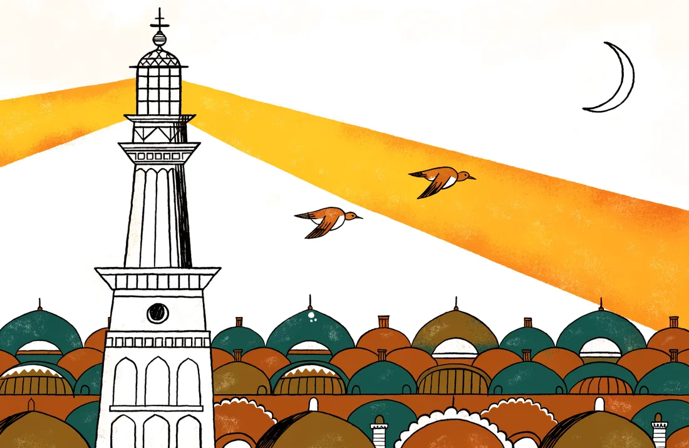
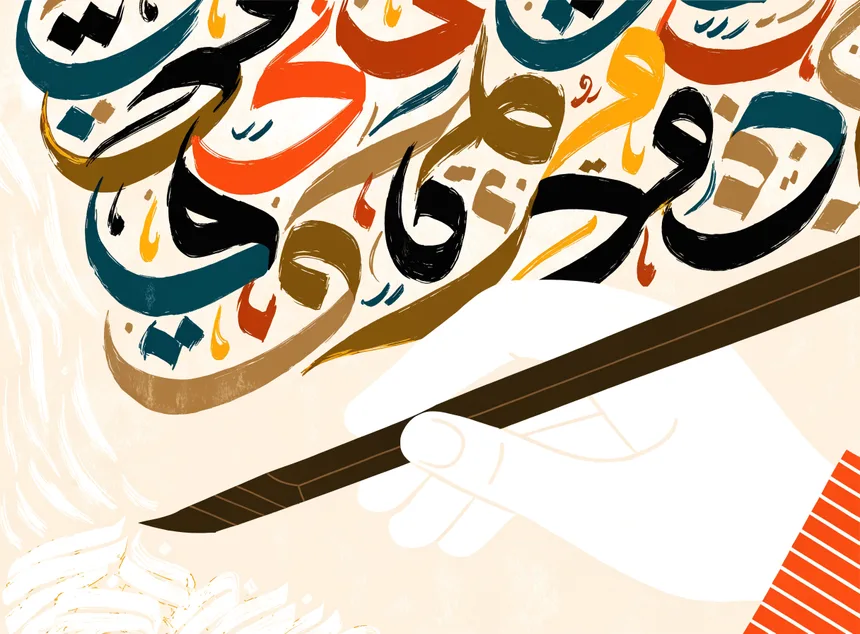
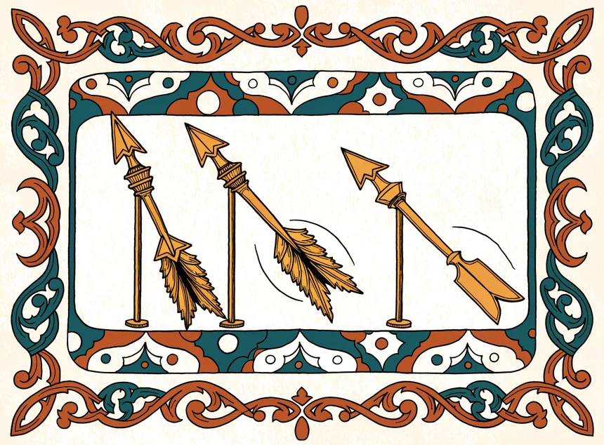
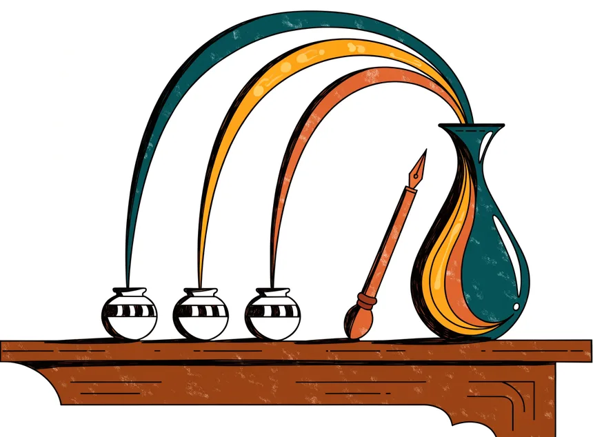

Publication · MAKE 8(4):110 · MDPI · 2026
One model. Many Arabics.
Patients don't speak textbook Arabic. MENARA merges an Egyptian specialist, a Moroccan Darija specialist, and a medical specialist into one 2-billion-parameter model that answers every patient in their own dialect — without retraining anything.

The problem, out loud
أعاني من صداعٍ شديدٍ منذ يومين، فماذا أفعل؟
“I've had a bad headache for two days — what should I do?”
Dialectal-fidelity scores (1–5), judged by Qwen 3 over 300 prompts per dialect — Table 1 of the companion study. “Medical” is the matching medical-competence score from Table 2.
The craft



The three inks: Meditron3-Gemma2-2B (medicine), a custom Gemma-2B Egyptian Arabic specialist, and Atlas-Chat-2B (Moroccan Darija) — same tokenizer, so nothing is lost in the pour.
The payoff
| prompt ↓ | MSA model | Egyptian model | Darija model | MENARA |
|---|---|---|---|---|
| MSA | ||||
| Egyptian | ||||
| Darija |
The problem. Arabic is not one language at the patient level. Clinical conversations happen in Egyptian, Darija, Gulf, Levantine — not in the Modern Standard Arabic that most models are trained on. A specialist per dialect works, but training, storing, and serving a separate medical model for every dialect doesn't scale.
The approach. Don't train — merge. MENARA combines three existing Gemma-2B specialists (Meditron3 for medicine, an Egyptian Arabic model, Atlas-Chat for Darija) with TIES: trim each specialist to its strongest parameter updates, elect a sign where they disagree, and merge the survivors into one model. Zero-shot — no gradient ever flows.
Every single model collapses outside its home dialect. The merged model is the only column with no bad rows.
What was hard. Proving fluency, not just claiming it. The evaluation is dual: an LLM judge (Qwen 3) scores dialectal fidelity and medical competence over 300 prompts per dialect, and native speakers of Egyptian and Darija rate naturalness and coherence by hand. The journal version goes further — dialect-composition analysis of lexical purity and code-switching, benchmarks against state-of-the-art Arabic LLMs, and subject-matter-expert review.
What shipped. A merged 2B model scoring 4.89 / 3.91 / 3.82 on dialectal fidelity across MSA, Egyptian, and Darija — where individual specialists fall as low as 1.91 off their home turf — with medical competence held near 4.0 everywhere and storage and deployment cost cut by more than 60% versus maintaining three models.
What this changes. Model merging becomes a practical answer to linguistic fragmentation in healthcare: when the next dialect is needed, you merge a specialist in — no retraining, no second server, no model zoo.
three Gemma-2B specialists (Egyptian · Darija · medicine) → TIES: trim (top-20%) → elect sign → merge [MergeKit, zero-shot] → one 2B model, every dialect → judged: Qwen 3 over 300 prompts/dialect + native-speaker review
Ibrahim, Hosseini, Helmy, Arabi, AlShareef, Lakhdhar, Serag. “MENARA: Medical Natural Arabic Response Assistant.” MAKE 8(4):110, MDPI, 2026. Open access (CC BY). Companion: “Bridging Dialectal Gaps in Arabic Medical LLMs through Model Merging,” ACL ArabicNLP 2025 — evaluation tables cited from the companion study.
Next project →